dr inz. Lukasz Makowski • Politechnika Warszawska • 1DR1616
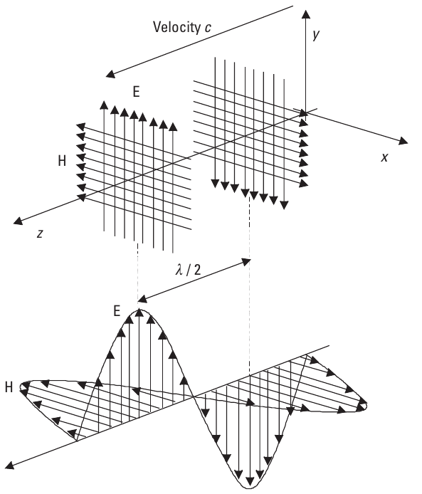
Fala elektromagnetyczna w polu dalekim — wektory E i B prostopadle do kierunku propagacji
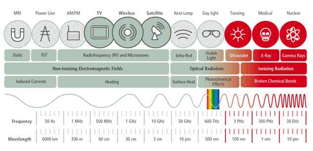
Typowe zastosowania czestotliwosci radiowych
| Jednostka | Odniesienie | Przyklad |
|---|---|---|
| dBW | 1 W | 30 dBW = 1 kW |
| dBm | 1 mW | 20 dBm = 100 mW (max WiFi w UE!) |
| dBV | 1 V | |
| dBuV | 1 uV | |
| dBi | antena izotropowa | |
| dBd | dipol polfalowy | |
| dBc | nosna |
k = 1,38 × 10⁻²³ J/K (stala Boltzmanna)
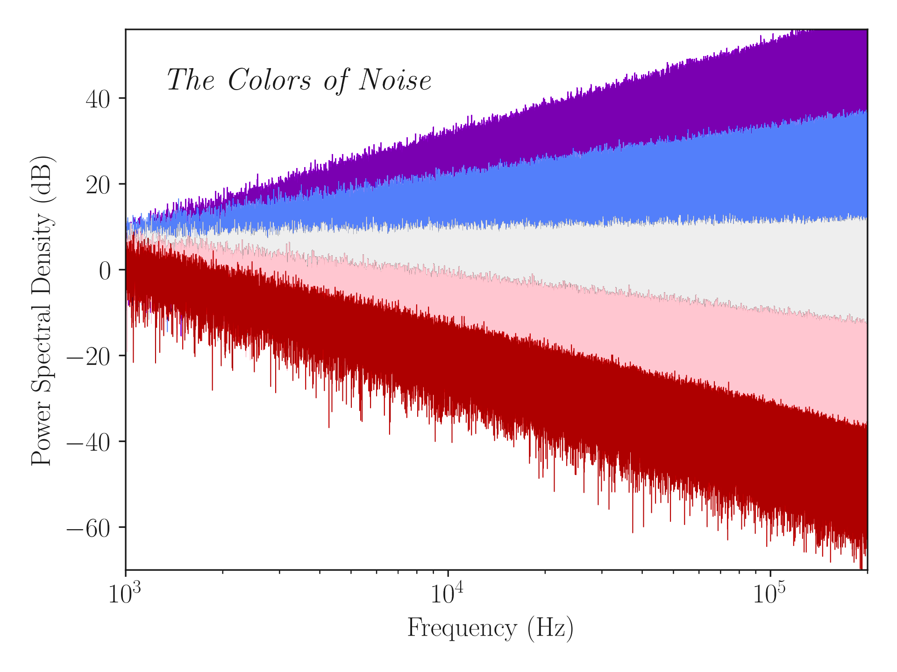
| Kolor | Zaleznoc widmowa | Nachylenie |
|---|---|---|
| Fioletowy | \(f^2\) | +6 dB/okt |
| Niebieski | \(f\) | +3 dB/okt |
| Bialy | \(1\) | plaski |
| Rozowy | \(1/f\) | -3 dB/okt |
| Czerwony | \(1/f^2\) | -6 dB/okt |
| Org. | Pelna nazwa | Zakres |
|---|---|---|
| ITU | International Telecommunication Union | Globalny |
| CEPT | Conf. of Postal and Telecom. Administrations | Europa |
| ETSI | European Telecom. Standards Institute | Europa |
| UKE | Urzad Komunikacji Elektronicznej | Polska |
| FCC | Federal Communications Commission | USA |
Modulacja to przeksztalcenie nosnej \(c(t)\) przez sygnal modulujacy \(m(t)\) w sygnal wynikowy \(s(t)\) o czestotliwosci zblizonej do nosnej, ale niosacy informacje. Warunek: \(f_c \gg f_m\).
Po tozsamosci trygonometrycznej:
Nosna wytlumiona → cala moc w wstegach bocznych. Cecha: odwrocenie fazy przy przejsciu m(t) przez zero. Wymaga demodulacji koherentnej!
Czysty iloczyn — brak nosnej, brak skladowych modulujacych.
Zastosowania: analogowy mnoznik 4-kwadrantowy, zbalansowany modulator, mieszacz czestotliwosci, wzmacniacz AGC, detektor fazy.
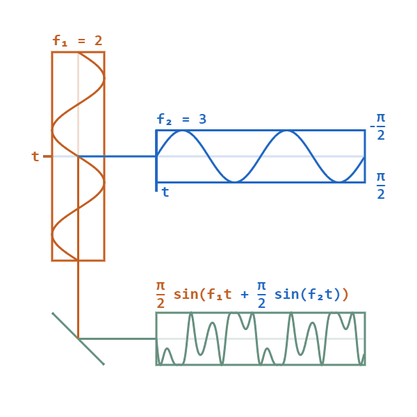
Animacja: modulacja fazy (PM) — faza zmienia sie proporcjonalnie do sygnalu modulujacego
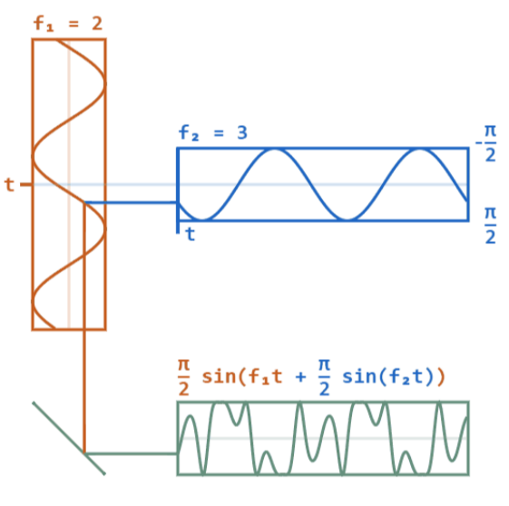
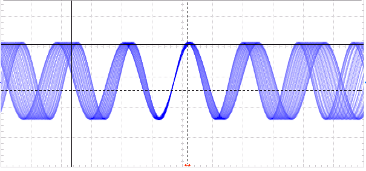
Sygnal FM w dziedzinie czasu — czestotliwosc zmienia sie z amplituda modulujacego
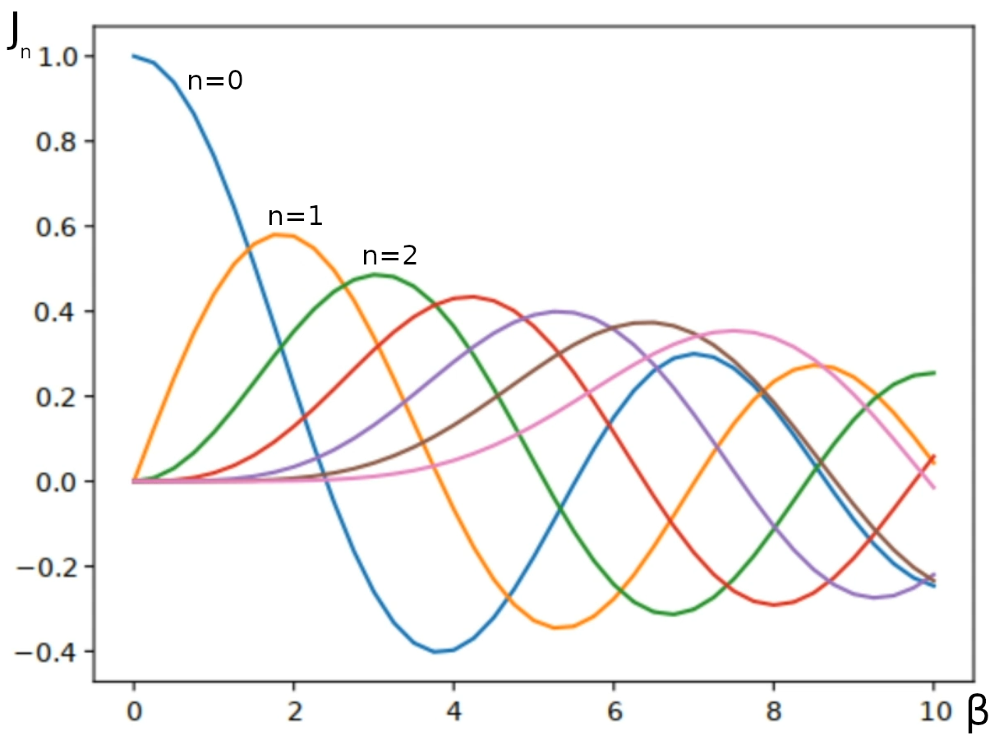
Funkcje Bessela pierwszego rodzaju J₀, J₁, J₂, J₃ ... — amplitudy prazkow widma FM
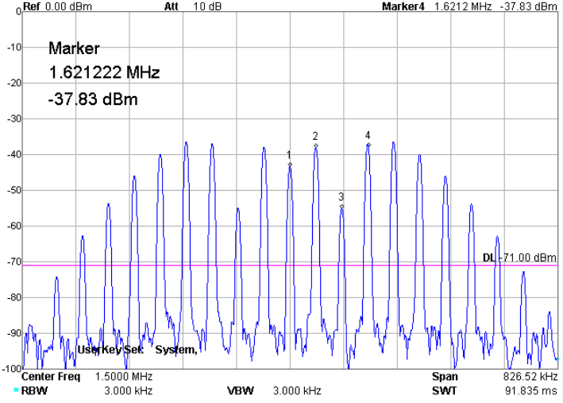
Widmo FM na oscyloskopie — widoczne prazki boczne
| Typ | Warunek | Istotne prazki |
|---|---|---|
| NBFM | \(\beta \leq 4\) | \(N = \beta+1\) |
| WBFM | \(\beta > 4\) | \(N = \beta+2\) |
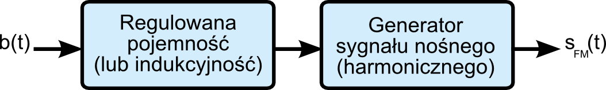
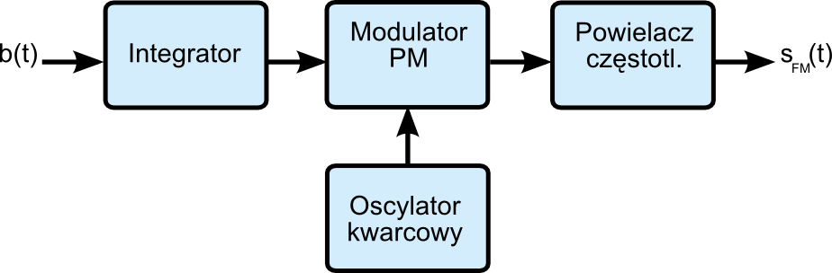
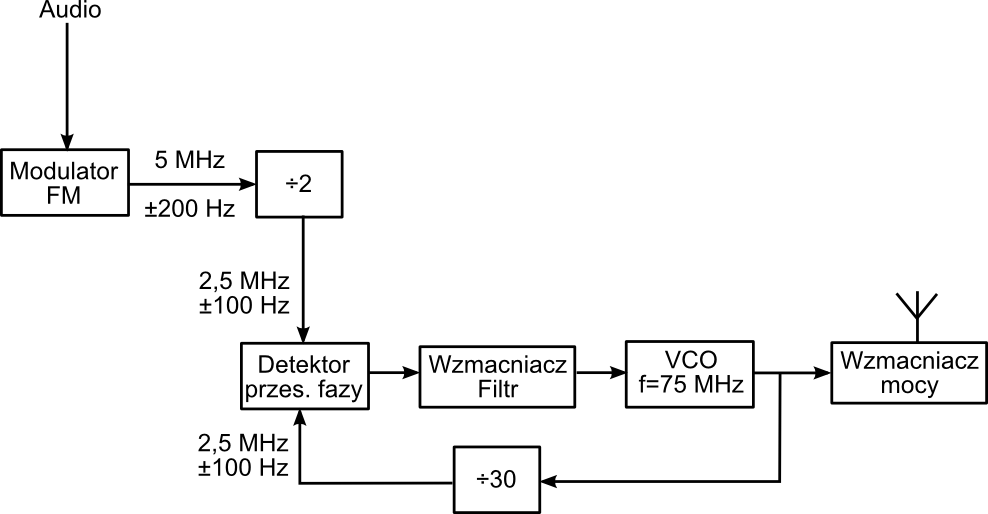
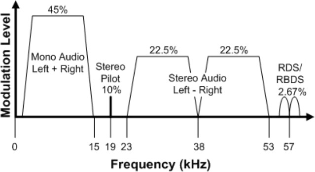
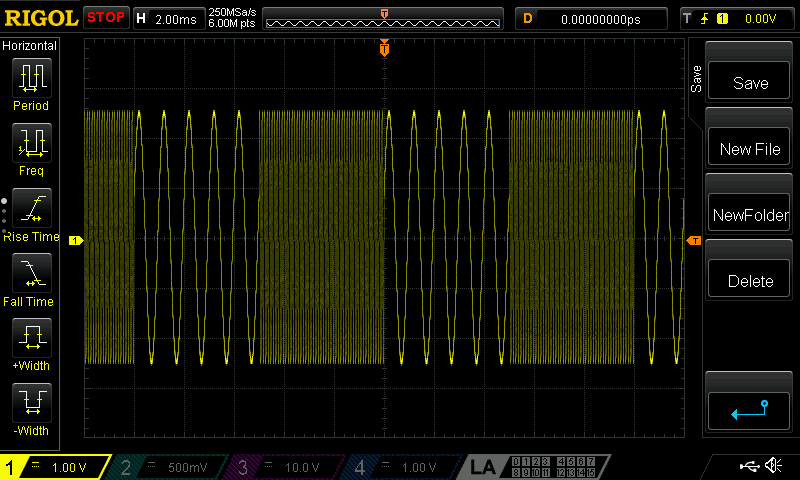
| Typ | Cecha | Zastosowanie |
|---|---|---|
| CPFSK | Ciagla faza | — |
| MSK | \(\beta\approx0{,}5\), min pasmo | — |
| GMSK | MSK + filtr Gaussa | Bluetooth, BLE, AIS, GSM |
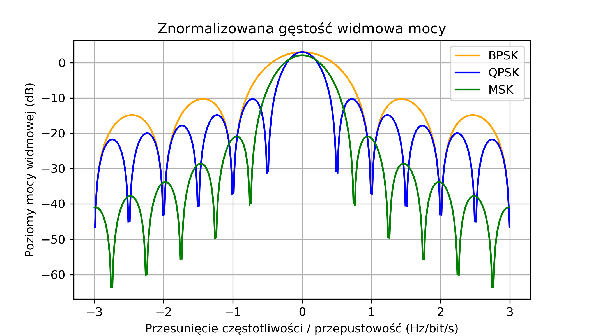
Porownanie gestosci widmowej mocy: BPSK vs QPSK vs MSK
Zmiana fazy o \(\pm\pi/2\). Wydajnosc: 0,5 bit/s/Hz.
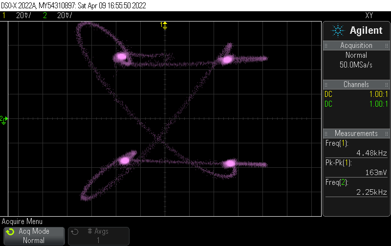
Diagram IQ sygnalow MPSK — punkty konstelacji na okregu
| Typ | Bity/sym | Cecha |
|---|---|---|
| BPSK | 1 | Najprostszy, wymaga synchro |
| QPSK | 2 | I i Q niezaleznie |
| OQPSK | 2 | Offset o pol symbolu |
| \(\pi/4\) QPSK | 2 | 2 konstelacje obrocone o \(\pi/4\) |
| 8PSK | 3 | 8 faz co \(\pi/4\) |
| DPSK | 1 | Roznicowa: 1=brak zmiany, 0=zmiana |
| D8PSK | 3 | \(\phi_k=\phi_{k-1}+\Delta\phi_k\) |
Zastosowania: DAB+ (DQPSK), SIGFOX (BPSK), TETRA (QPSK/π/4), DVB-S (QPSK/8PSK).
Jednoczesna modulacja amplitudy na osi I (cos) i Q (sin).
| Typ | \(\kappa\) (pasmo 0→0) | \(\kappa\) (30 dB) |
|---|---|---|
| OOK, BPSK | 0,500 | 0,052 |
| QPSK, OQPSK, π/4 QPSK | 1,000 | 0,104 |
| MSK | 0,667 | 0,438 |
| 16-QAM | 2,000 | 0,208 |
| 64-QAM | 3,000 | 0,313 |
Wiele urzadzen dzieli kanal — kazde na wylacznosc w przydzielonej szczelinie czasowej.
| System | Kanal | Szczeliny |
|---|---|---|
| GSM (2G) | 200 kHz | 8 |
| TETRA | 25 kHz | 10 |
| DMR | 12,5 kHz | 2 |
| Iridium | satelitarny | TDMA/FDMA |
| Bluetooth | 1 MHz | 625 (FHSS) |
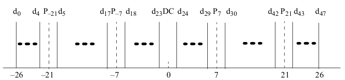
Wszystkie stacje jednoczesnie w calym pasmie. Rozroznienie przez unikalne kody ortogonalne.
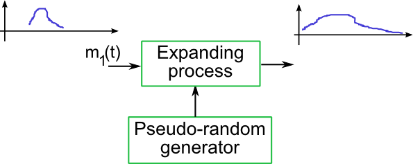
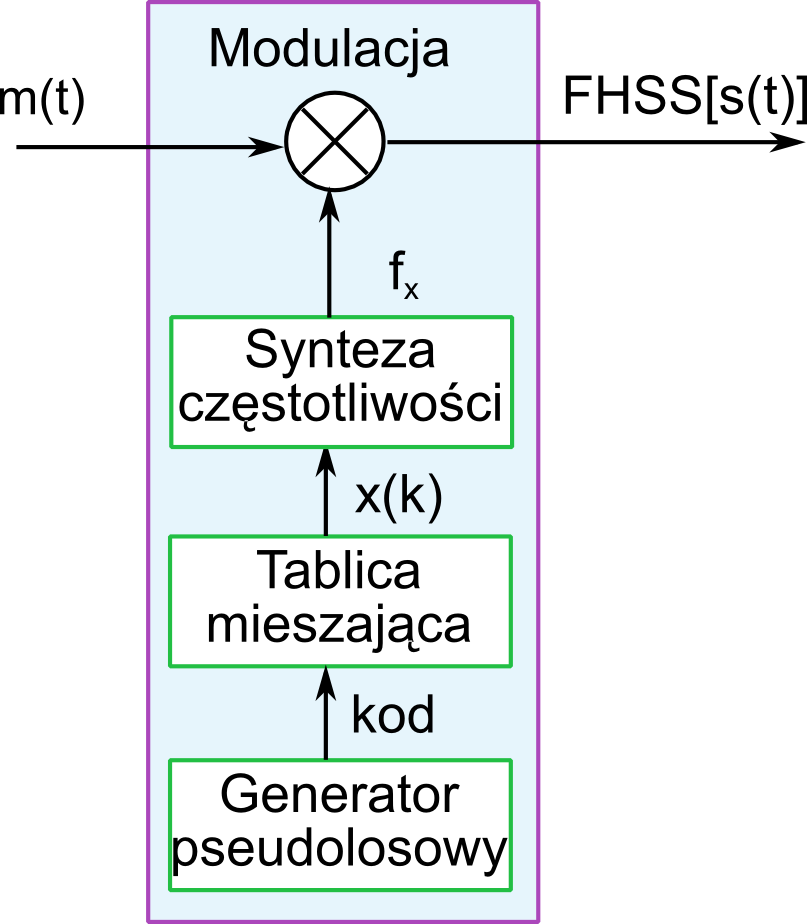
Dlugosci: 2, 3, 4, 5, 7, 11, 13. Optymalna autokorelacja.
Oficjalne nagrania wykladzicy — ten sam material co na slajdach, ale z objasnienami.
Kliknij w karte by zobaczyc odpowiedz. 25 fiszek z kluczowymi pojec.
25 pytan z prawdziwego egzaminu. Sprawdz odpowiedz po zaznaczeniu — rozwiazanie z obliczeniami.